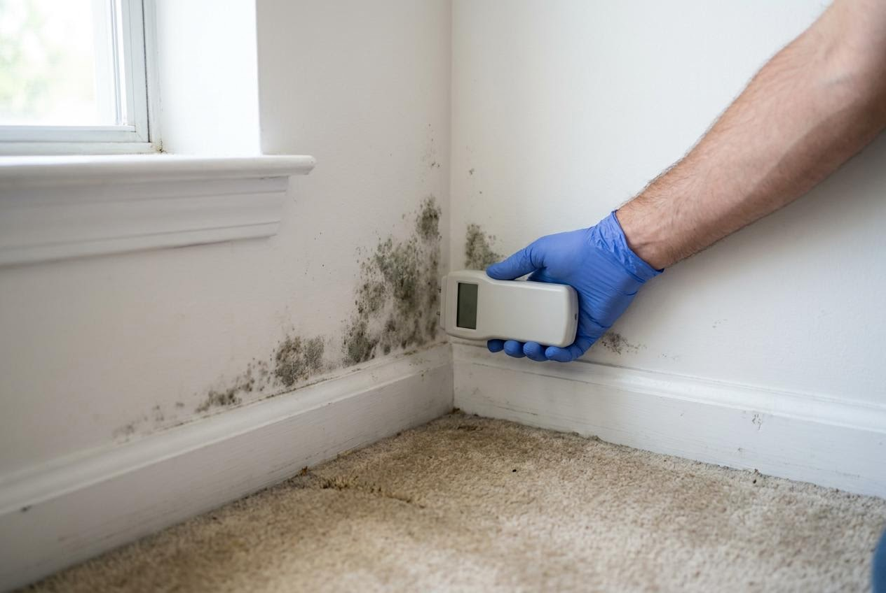

Beyond looking bad, mold endangers health and tells you there is a moisture problem underneath, one that can weaken the building itself. Mold exposure can cause respiratory issues, allergic reactions, headaches and more severe health effects, particularly in children, the elderly and people with compromised immune systems. For houses and businesses in Towson, the certified team at Towson Restoration works to IICRC protocols so mold is contained safely, taken out and prevented from coming back.
Wiping away the mold you can see is not remediation. Professional remediation means identifying the moisture source feeding the mold, setting up containment to prevent cross-contamination, removing affected materials safely with HEPA-filtered equipment, treating the remaining surfaces with antimicrobial solutions and fixing the underlying moisture problem so it does not recur. Our comprehensive approach means mold is eliminated at the source, not just hidden for a while.
First comes a full assessment of the property, frequently with air quality tests that identify the kinds of spores in the air and how concentrated they are. With that data we can build a remediation plan aimed at exactly what your property needs. Throughout the project we maintain negative air pressure containment, run HEPA air scrubbers and follow the IICRC S520 standard for mold remediation. A final verification step, which can include a clearance air test on request, shows that the space meets the standard for safe occupancy.

Mold Remediation: DIY or Professional?
Some simple tasks are suitable for DIY, but most mold work benefits from professional tools, training, and experience. Here's a comparison:
| Factor | DIY Approach | Professional Service |
|---|---|---|
| Verification | Results are a guess without testing | Verified after the work is finished |
| Thoroughness | Hidden mold survives a surface wipe | Visible and concealed mold both removed |
| Debris Disposal | Contaminated drywall often handled without sealing | Disposal that follows EPA guidelines |
| Property Value | Buyers may question amateur mold work | Documented professional remediation protects value |
| Health Safety | Scrubbing sends harmful spores airborne | Protective equipment and sealed work area |
Need Help With Mold Remediation?
Call Towson Restoration for fast, reliable service.
Call (425) 207-3320 NowHow Our Mold Remediation Works
Our systematic approach delivers quality results on every project. Here's what you can expect when you choose Towson Restoration:
Mold Inspection and Sampling
The inspection locates hidden as well as visible growth and pins down where the moisture comes from, and our certified technician may send air or surface samples out for lab analysis.
Containment & Filtration
HEPA air scrubbers and polyethylene barriers put the work zone under negative air pressure, which keeps spores from reaching clean parts of the building while we remove the mold.
Mold Removal & Treatment
We carefully take out the affected materials and dispose of them according to EPA guidelines. The structure left in place gets treated with antimicrobials of professional strength.
Fixing the Moisture and Verifying Results
Last, our team fixes what was feeding the mold, dries whatever remains damp and verifies the remediation, and only then is the containment released.
Mold Remediation Prevention Tips
A little prevention goes a long way in avoiding expensive restoration emergencies. Follow these tips from our IICRC-certified technicians:
- Fix water leaks within 24 hours, because mold needs only moisture and 24 to 48 hours to start growing
- Laundry rooms, baths and kitchens all need working exhaust ventilation that is sized for the space
- Overflowing gutters send water into basements and crawl spaces, so clean them on a schedule
- Dry wet rugs, towels and spills right away instead of letting them sit
- Aim for 30 to 50% indoor humidity and never let it stay above 60%, running dehumidifiers and ventilating as needed
- In bathrooms, basements and other damp areas, choose paint and drywall rated mold-resistant
The Benefits of Professional Mold Remediation
Removing mold is work homeowners should not attempt on their own. Disturbing mold colonies without proper containment sends millions of spores airborne, which can contaminate unaffected areas of your home and create worse health exposure than the original problem. Capturing and containing the spores during removal takes HEPA-filtered scrubbers, protective equipment for the crew and containment kept under negative air pressure, which is how professionals do it.
Professional mold remediation also addresses the root cause of the growth, which is the moisture source. Removing visible mold without correcting the underlying moisture problem means the mold will return, often within weeks. Our certified technicians are trained and equipped to track down moisture you cannot see, dry the affected areas the right way and make the corrections that keep mold from recurring.
Questions About Mold Remediation?
We provide honest advice and free estimates on all mold remediation work.
Call (425) 207-3320 TodayWarning Signs for Mold Remediation
Recognizing the warning signs early can save you time, money, and prevent significant damage to your property. Watch for these telltale signs that professional help is needed:
- Headaches, allergy flare-ups or breathing symptoms that ease whenever you leave the house
- Cleaning that never lasts, with growth returning to the same surface
- Condensation forming regularly on windows, walls or cold surfaces
- Furniture against outside walls or items in closets developing speckled patches
- Dark staining or discoloration on walls, ceilings or around HVAC vents
- Closets, bathrooms or other damp, enclosed rooms that always smell musty
- Peeling wallpaper, bubbling paint or warped materials that point to hidden moisture
Don't Wait Until It's an Emergency
What seems like a minor issue today can turn into a major expense tomorrow. If you notice any of these signs, contact Towson Restoration at (425) 207-3320 for a prompt evaluation.
Your Mold Remediation Questions Answered
Schedule Your Mold Remediation Service
Don't let mold problems get worse. Call Towson Restoration now for prompt, professional service.
Get Help: (425) 207-3320